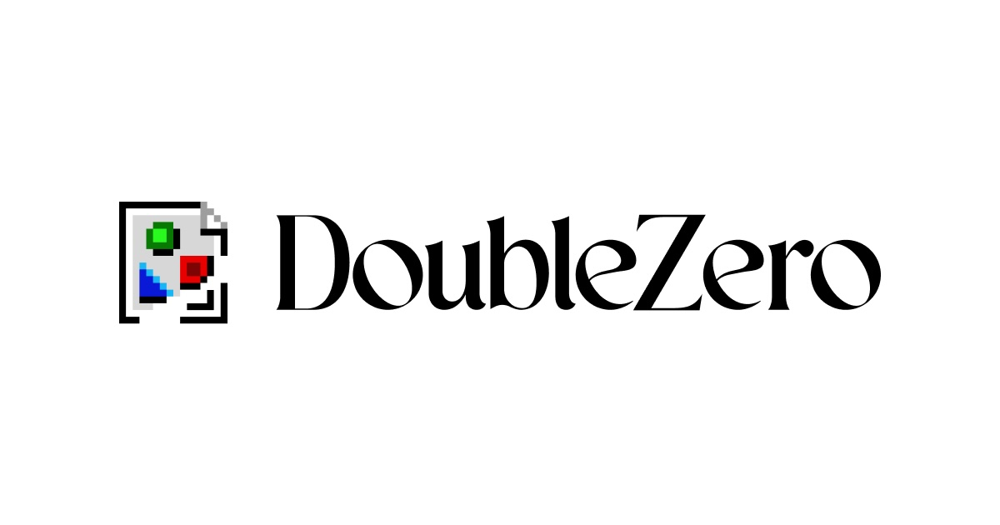
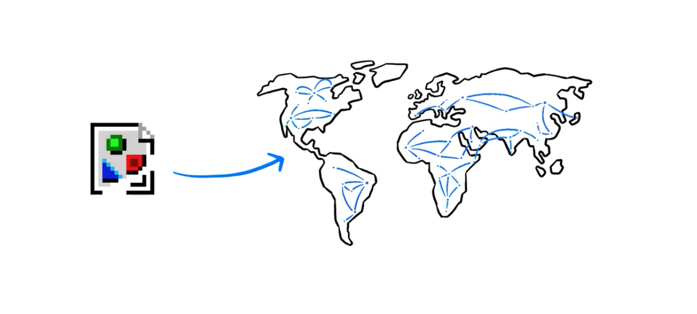
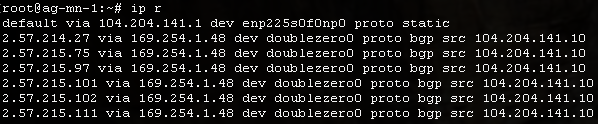
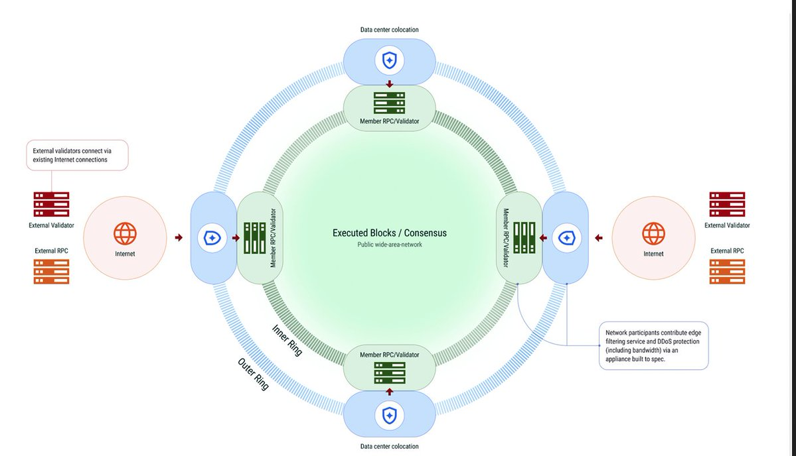
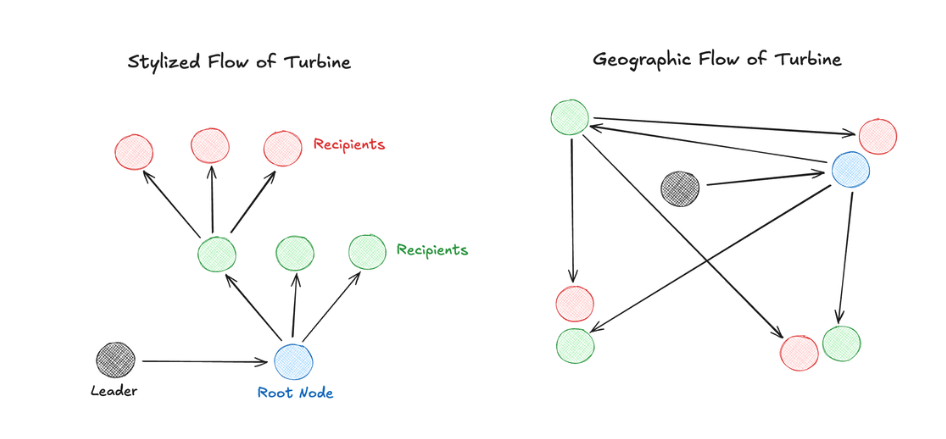
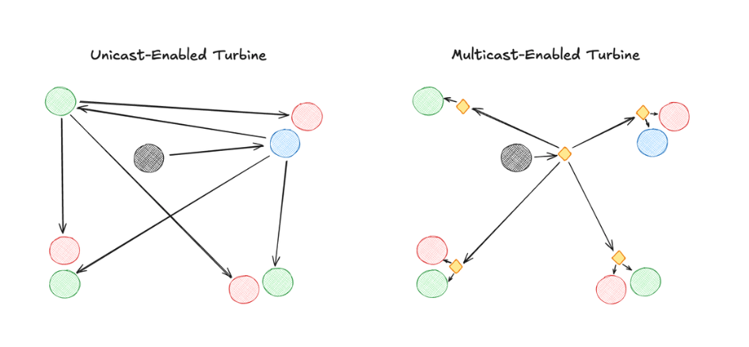
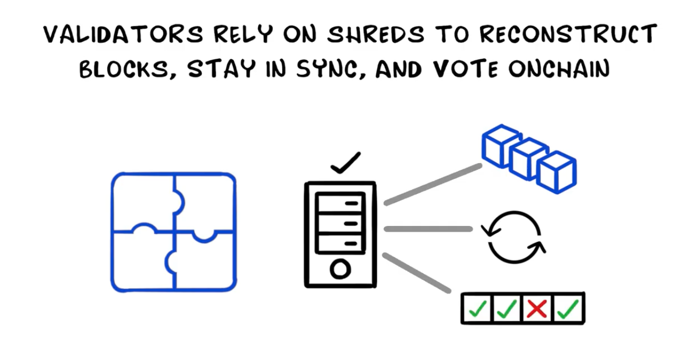
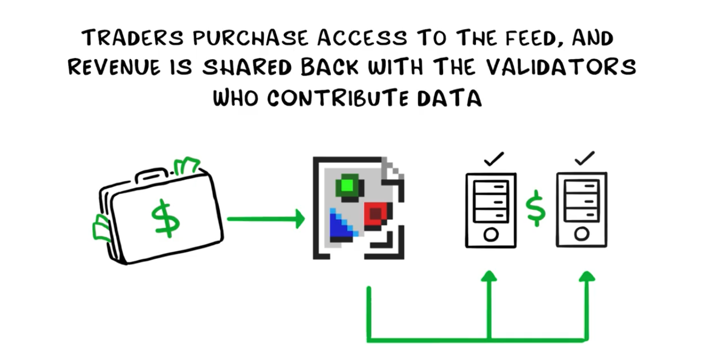
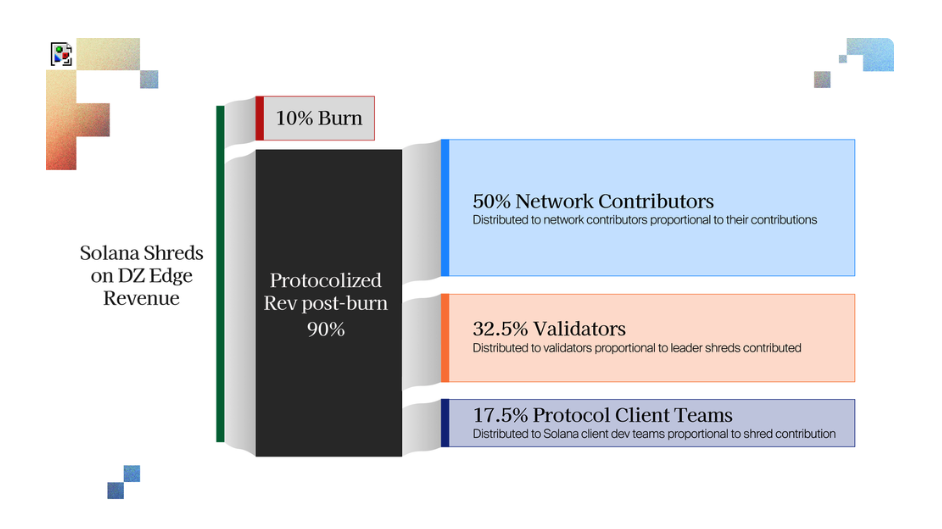

Un réseau mondiale de fibres optiques au service de Solana
La Vision de Solana : Nasdaq Décentralisé
Toly & Max Resnick (Anza) — pour battre le NYSE sur les spreads,
3 prérequis sont identifiés :
Ordonnancement
nouvelle politique d'ordre des transactions, prioriser les cancels des market makers
Leaders Multiples
Leaders concurrents pour éliminer la censure et uniformiser le marché
Des blocs en simultanés
Les leaders doivent valider au même instant → nécessite un réseau avec jitter minimal
Le Problème : l'internet public n'est pas fait pour les blockchains à haute performance
- BGP optimise la disponibilité, pas la vitesse
- 10-15 sauts FAI par paire de validateurs
- Jitter imprévisible (50–200 ms)
- Pas de multicast
- Propagation des blocs entre validateurs lente et irrégulière
- MEV asymétrique : certains acteurs reçoivent les données plus vite
- RPC et apps voient un état onchain en retard
Qu'est-ce que DoubleZero ?

- Réseau fibre privé décentralisé alimenté par des contributeurs de fibres indépendants et récompensés en tokens 2Z
- L'internet public = route nationale partagée · DoubleZero = autoroute privée pour Solana — plus courte, sans embouteillages
- Fondé par Austin Federa (ex-Solana Foundation), Andrew McConnell, Mateo Ward · 28M$ levés — Multicoin Capital, Dragonfly Capital
Architecture Réseau
Switch Arista physique, point d'entrée/transit du réseau
Hub métropolitain reliant les fibres de différents contributeurs
Liens fibre entre DZDs — même contributeur ou via le DZX

ce qui circule sur DZ
- Qui sont les validateurs connectés ?
- Qui est qui ?
- Shreds = fragments de bloc
- Circulent grâce à Turbine en IBRL ou Multicast
- Les RPC peuvent se connecter à DZ
- Communication des données (état, shreds) via le réseau
Le Chemin d'un Bloc dans le réseau DZ
Découpé en shreds pour la distribution via Turbine
Via tunnel GRE — aucun saut FAI, pas d'internet public
Dédup shreds + validation format + rate limiting
2-4 sauts sur fibre dédiée, MTU 9000, routage optimisé
Jitter minimal + meilleure stabilité

Le protocole Turbine
Protocole de propagation des blocs sur Solana — diffusion en arbre pour scaler au-delà d’un simple broadcast.

- Le leader découpe le bloc en shreds et les envoie à une première couche de nœuds
- Chaque nœud relaie vers la couche suivante — structure en arbre, pas un envoi direct à tous
- Mais Turbine est aveugle à la position géographique des validateurs...
DZ en mode IBRL

- Propagation des shreds : Leader → Root Node → gros validateurs → petits validateurs
- La latence augmente à chaque niveau
- DZ en IBRL classique : shreds sur fibre dédiée, validateurs les plus stakés reçoivent plus vite
Multicast sur DZ
Un envoi du leader vers un groupe multicast → le réseau DZ réplique vers tous les abonnés (validateurs et RPC).

- Leader publie les shreds une fois vers le groupe multicast DZ, communication plus efficace
- Réplication simultanée vers tous les abonnés — plus d'arbre de relais par couches
- Livraison géographiquement optimisée et plus juste par le réseau DZ
L'économie des shreds — avant le Multicast et Edge

- Les shreds ont une valeur énorme pour les arbitrageurs, les liquidity providers, les traders et les MM : ils reflètent l'état le plus récent du réseau
- Tous ces acteurs veulent un accès plus rapide aux données (avant confirmation) - forte demande
- Validateurs les plus stakés reçoivent les shreds en premier et les vendent aux traders via des deals privés
DoubleZero Edge : Un nouveau marché des données


- DZ Edge: accès en théorie plus rapide aux shreds pour les traders + nouvelle source de revenus pour les validateurs
- Grâce au multicast, tous les validateurs (même petits) peuvent monétiser leurs shreds
- L'impact sur le Solana reste à mesurer, Edge n'est pas encore live
Merci!
Stakez vos SOL sur Gvt8s5Bwnhg4G27VbnT1Zkfh7Jsztq6CNvZcc5anPonS